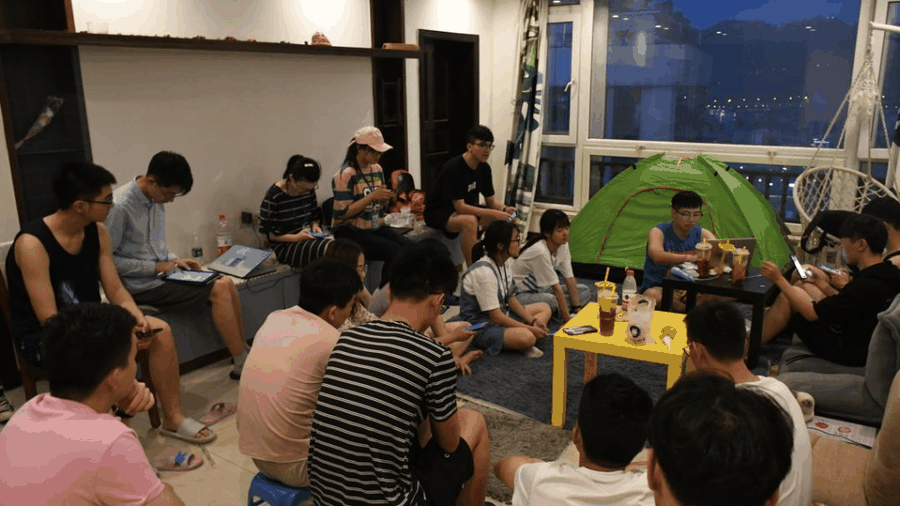
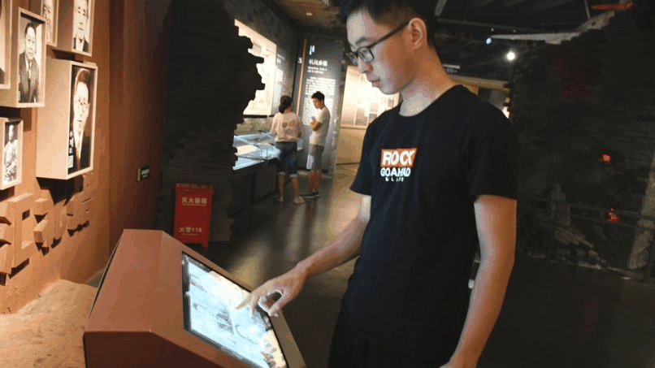
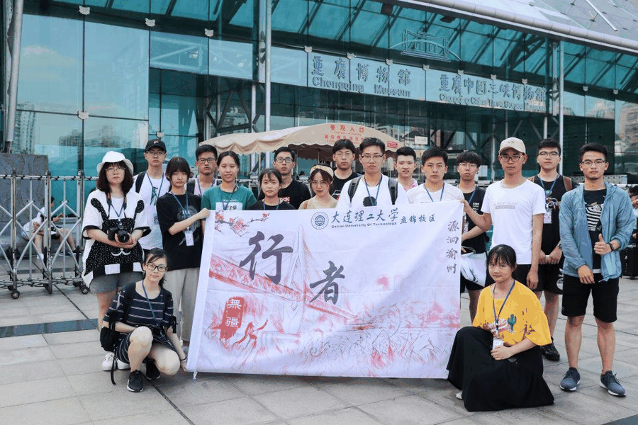
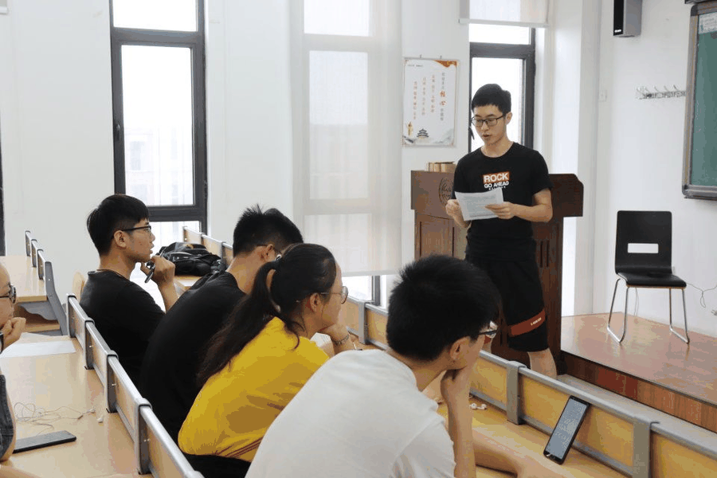
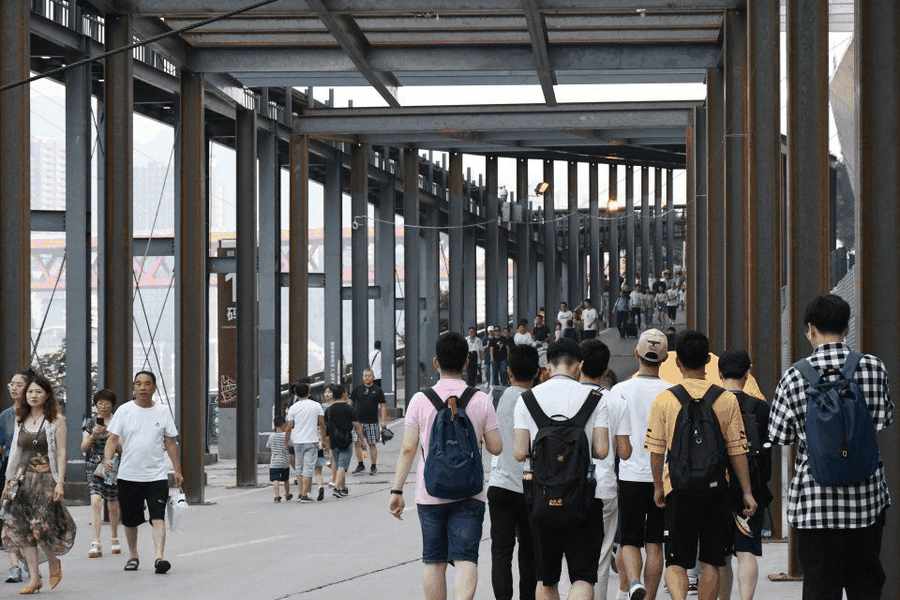

【渝传尺素•十四】乘兴而来，满载而归
每日充实的行程让我能够在有限的时间了解尽量多的文化知识、历史发展和现状。
每日的团队会议让我理解“莫看江面平如镜，要看水底万丈深”的深刻含义，大家深度思考的碰撞，让我能认识到比白天看到更多的内容，除了简单直抒胸臆的感叹，还有的深刻内涵的深思。

团队会议进行中

如果说西安是朝堂之上，
那么重庆就是江湖之远。
二者都有着独特的历史文化，却又总是因网红文化而浮于表面。重庆的磁器口，洪崖洞，长江索道处万头攒动，川剧院，各处博物馆却难掩门庭冷落。巴渝文化和英雄文化的非正常发展也就不足为奇。
当今历史文化的传承一无是处吗？
NO!我也看到重庆巴渝文化和英雄文化也有可喜的地方。比如川剧的传承能形成一套完整的体系，教育机构、学术研讨、创新求变等许多方面都有着相应的环节。对英雄人物、英雄文化的记忆也融入到城市的最深处，不仅仅是一代人的自我奉献，留下的精神，更是培育后世英雄的基石。
感知文化

实践团队的团结协作让我看到整体的力量。
宣传组、调研组、文字组、外联组、采访组、后勤组、财务组、摄影美工组八大小组的分工合作让一次远行两千多公里的调研能够完美有序的进行。一方面各个组员按时按量的完成自己的分内任务，另一方面不同小组又适时联动，能够更好的为文化调研服务。

作为调研组的一员，后顾这次文化调研，从最初的毫无头绪，到查阅资料的思路出现，再到实地调研的清楚明白，最后是离去的深刻思考，一步一步的走来。正如维特根斯坦所言：“我贴在地面步行，不在云端跳舞。”本次调研之行我也体会到脚踏实地才能收获满意的结果。
在本次实践活动中我更深刻体会到“问题探索式”调研的意义。一双眼睛在有限的时间内难以收进所有事物，因此事先的查阅资料，思考问题显得尤为重要。在本次活动前期，积极开展文化科普和行者课堂，想清楚调研地点和主题的契合点，才能更有效率的完成调研。

行者课堂 高效调研
相比于上一期的文化调研，我在本次实践活动争取改进上一次做的不够好的地方。
“反省是一面镜子，它能将我们的错误清清楚楚地照出来，使我们有改正的机会。”之前的团队会议我发言欠缺思考，这一次就试着白天调研过程中开始联系调研主题，晚上开会前总结好个人想法，会后总结有价值有意义的话题点。这一方面有助于编写调研报告的思路启发，另一方面也使得我能够积极高效的投入到白天调研过程中去。
“我不知道将去何方，但我已在路上。”行者的行程，不将最终结果视为唯一价值标准，走在路上，用心体会文化调研的过程和感悟，更是追寻的另一种意义。

来源丨行者无疆实践团
文字丨陈子健
排版丨康艳虎
审核丨邓子孚 段智然
视频丨陈辉
行者无疆实践团
QQ：2758025831

随行者一起认识世界
长按二维码